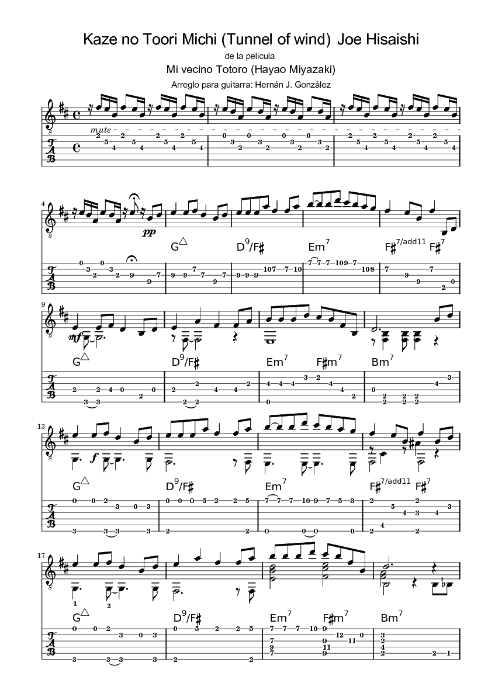
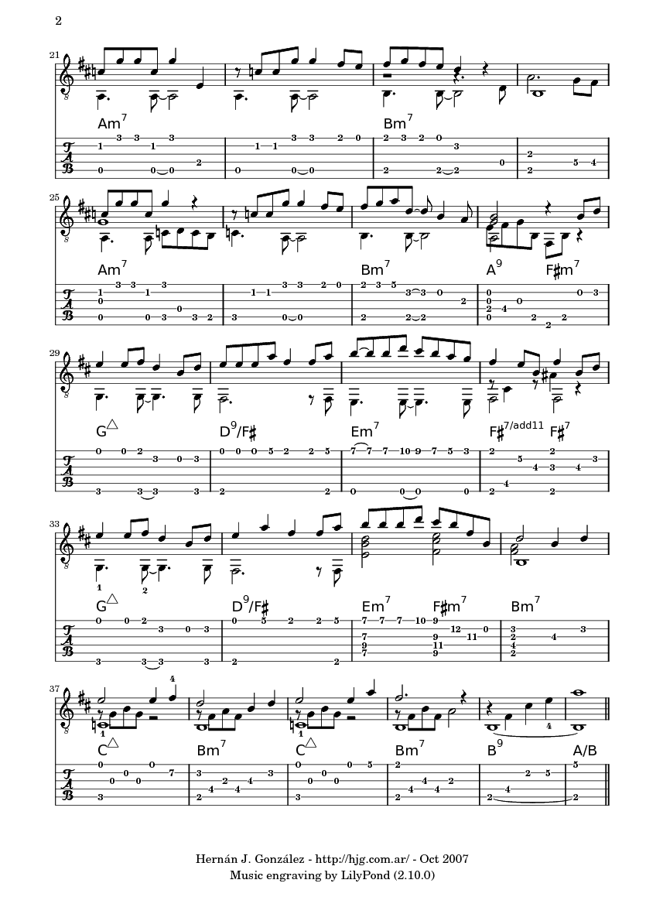

Kaze no Toori Michi
(Tunnel of wind)
de Joe Hisaishi
de la película "
Mi vecino totoro
", de Miyazaki
-mi arreglo para guitarra-
PDF
·
video
más partituras
·
Mi sitio Ghibli
 
PDF
·
video
más partituras
·
Mi sitio Ghibli
By:
Hernán J. González
hgonzalez@gmail.com